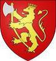

2858418180 Konge Erik "Blood-axe" Haraldsson
Kung i Norge, Northumbria o York. Blev högst 69 år.

Född:
885 Sogn, Norge. [1]
Död:
954 Stainmore, England. [1]
Barn:
Personhistoria
885
Födelse 885 Sogn, Norge
[1]
954
Död 954 Stainmore, England
[1]
Källor